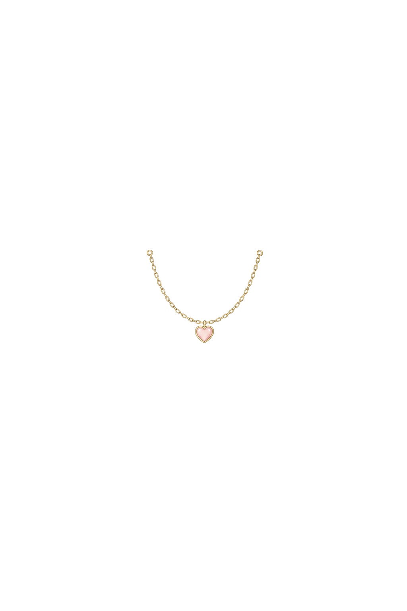
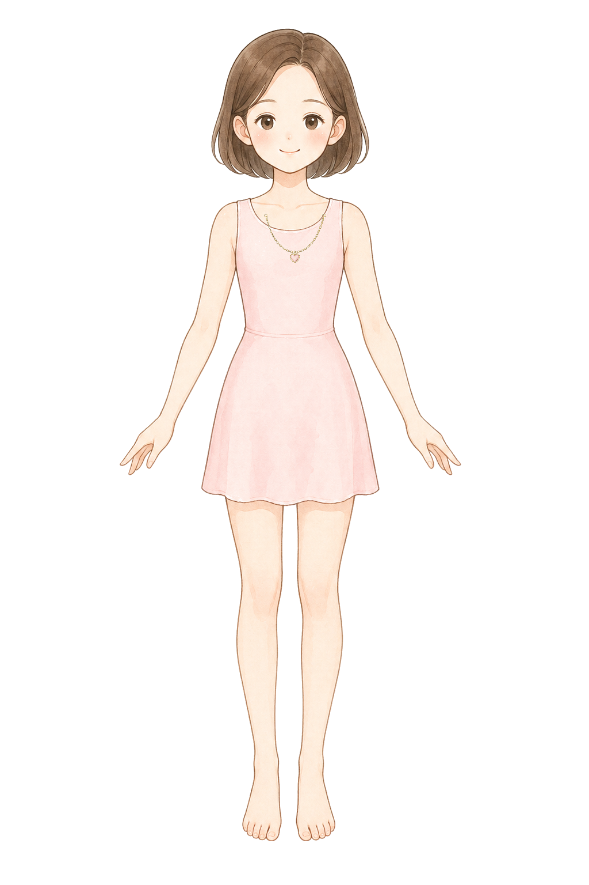
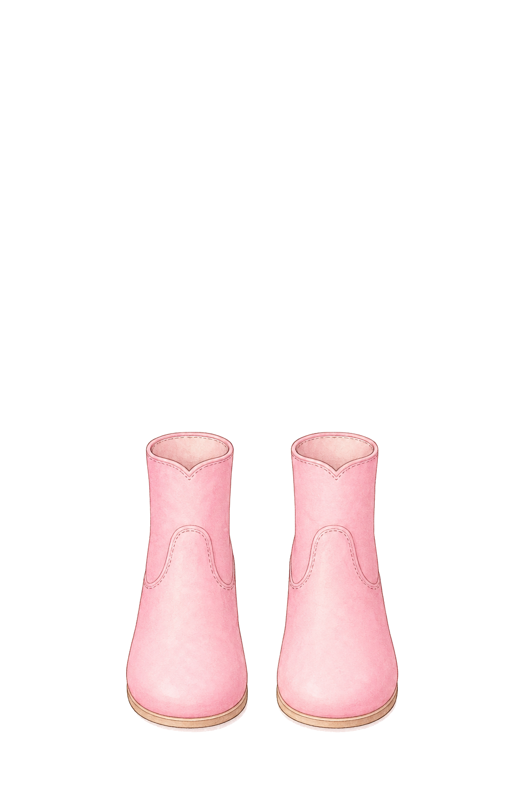
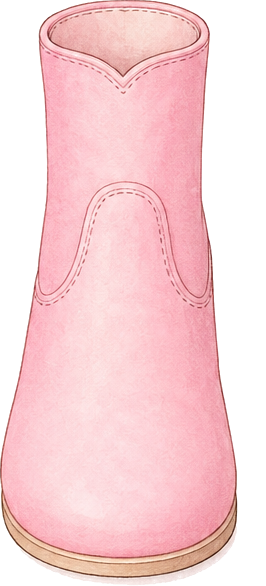
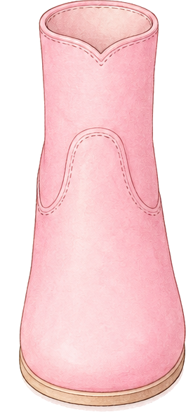
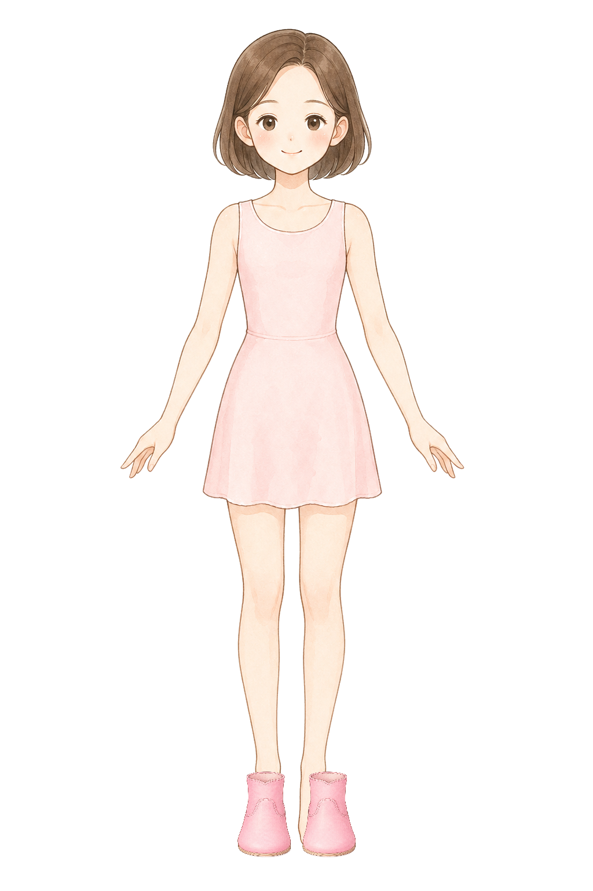

Base: style-d-encyclopedia-clean-base. Boots use fixed smaller fit rects: {"leftShoe":{"x":410,"y":1330,"width":92,"height":148},"rightShoe":{"x":522,"y":1330,"width":92,"height":148}}.
necklace
Necklace: short collarbone fit
ok
BaseCutout

NormalizedComposite

very short collarbone princess necklace fitted inside a front-facing paper doll neckline, original pastel storybook encyclopedia illustration, soft watercolor-like coloring, clean fine linework, draw only the necklace and no body, no neck, no dress, no mannequin, pure white 1024 by 1536 canvas, tiny symmetrical shallow U-shaped chain with one small heart pendant exactly on the body center line at x 512, chain ends near x 452 and x 572 around y 392, the chain stays inside the dress neckline opening, does not touch shoulder straps, does not extend toward shoulders, total width no more than 150 pixels, small delicate child paper doll accessory, no earrings, no tiara, no text, no watermark
boots
Boots: ankle scale overlay fit
ok
BaseCutout

Left split

Right split

Left normalizedRight normalizedComposite

pair of slim short ankle boots only for a children princess dress-up game, original pastel storybook encyclopedia illustration, soft watercolor-like coloring, clean fine linework, front view boots only, no legs, no feet, no socks, no skin, no body, no mannequin, pure white 1024 by 1536 canvas, narrow boot opening matching a small ankle width, rounded toe covers toes but the boot is not oversized, each boot about as wide as a child paper doll foot, soft pink simple ankle boots with minimal decoration, place left boot near toe x 450 y 1436 and right boot near toe x 572 y 1436, matched pair, same size left and right, no text, no watermark